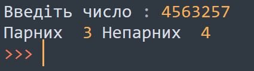
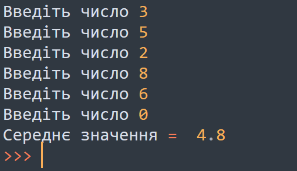
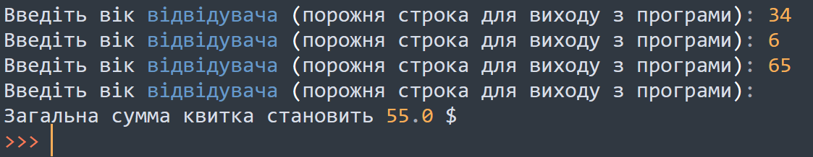

Практичне заняття 2.
Завдання №1
Визначити, скільки серед парних цифр, а скільки непарних. Число вводиться із клавіатури.
Приклад вхідних і вихідних данних.

Завдання №2
Знайти середнє значення. Написати програму, яка знайде середнє значення введених послідовно чисел. При введені числа нуль програма виводить результат.
Приклад вхідних і вихідних данних.

Завдання №3
У зоопарку ціна вхідного квитка залежить від віку відвідувача. Діти до два роки допускаються безкоштовно. Діти віком від трьох до 12 років можуть відвідувати зоопарк за $14.00. Пенсіонерам старше 65 років вхід обійдеться $18,00, а звичайний дорослий квиток коштує $23,00. Напишіть програму, яка буде запитувати вік відвідувачів і при порожній строці буде(не вводити цифр просто натиснути enter) виводити загальну ціну за вхід у зоопарк.
Приклад вхідних і вихідних данних.
